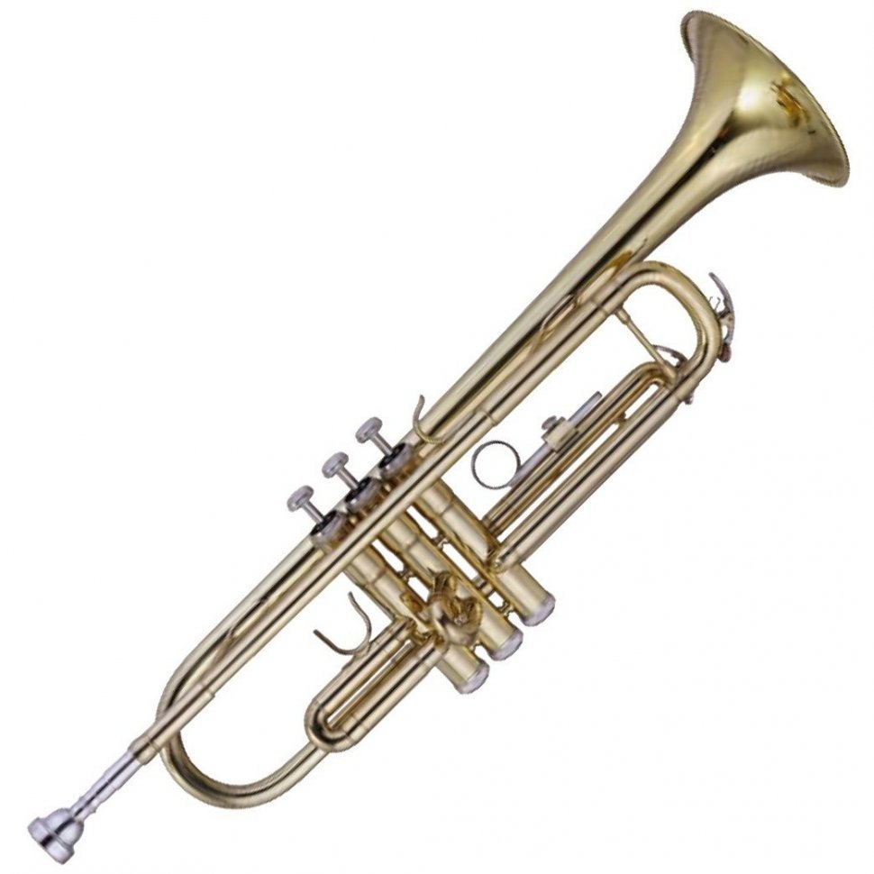
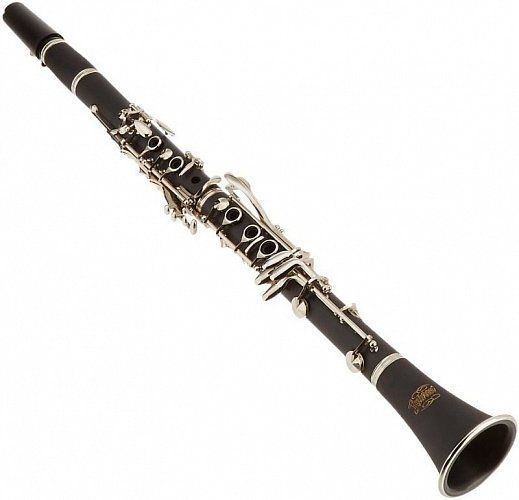
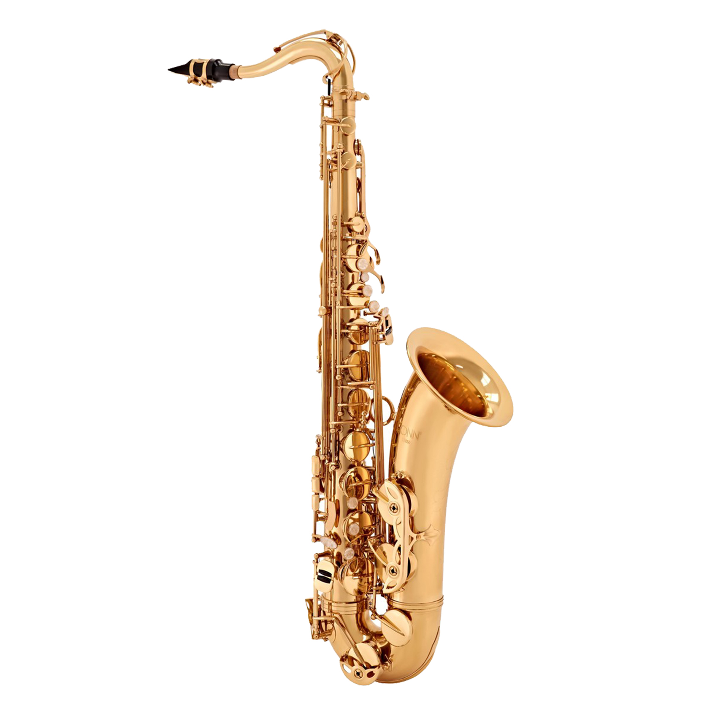
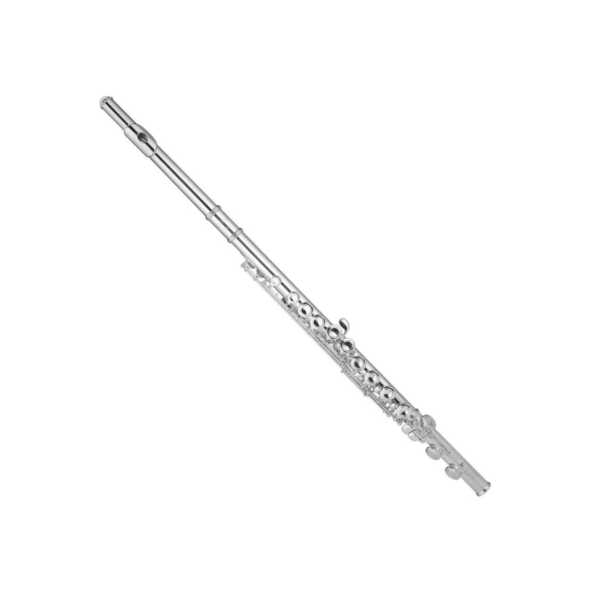

Труба — один із найвідоміших духових інструментів, що використовується в класичній, джазовій
та військовій музиці. Вона має яскравий, проникливий звук і вимагає від музиканта хорошої
техніки дихання та витривалості.

Труба
Кларнет з’явився наприкінці XVII століття завдяки німецькому майстру Йоганну Деннеру.
Його використовують у класичній, джазовій, камерній та духовій музиці.
Кларнет має здатність охоплювати великий діапазон нот і динаміки, а його м’який,
плавний звук виділяє його серед інших дерев'яних духових інструментів.

Кларнет
Саксофон винайдений у 1840-х роках бельгійцем Адольфом Саксом, був створений для
поєднання сили мідних духових і гнучкості дерев'яних. Сьогодні він широко застосовується
у джазі, блюзі, рок-музиці та навіть класичних творах. Його вирізняє теплий, "голосовий"
тембр, здатний передавати глибокі емоції виконавця.

Саксофон
Флейта була вдосконалена у 1832 році Теобальдом Бемом — німецьким музикантом
і інженером. Вона використовується у класичній, фольклорній, а також сучасній оркестровій музиці.
Її особливість полягає в тому, що вона не має тростини — звук утворюється шляхом спрямування повітря
на край отвору, що надає звучанню легкості й чистоти.
